Khoa Dược -
Xét nghiệm
Đơn vị đào tạo chuyên sâu về Dược học và Xét nghiệm y học của Trường Cao đẳng Y tế Cần Thơ, đồng hành cùng sự phát triển của ngành y tế.
- Thành viên
- 21
- Giảng viên sau đại học
- 18
- Bộ môn trực thuộc
- 4
Tin tức
Giới thiệu
Khoa Dược - Xét nghiệm là đơn vị đào tạo chuyên sâu trực thuộc Trường Cao đẳng Y tế Cần Thơ, nơi hội tụ đội ngũ giảng viên giàu kinh nghiệm và cơ sở vật chất hiện đại, đáp ứng tiêu chuẩn giáo dục chất lượng cao. Khoa cung cấp các chương trình đào tạo về Dược học và Xét nghiệm y học, trang bị cho sinh viên kiến thức chuyên môn vững chắc, kỹ năng thực hành chuyên nghiệp và tinh thần trách nhiệm trong lĩnh vực chăm sóc sức khỏe. Với sứ mệnh đào tạo nguồn nhân lực chất lượng cao, Khoa không ngừng đổi mới, gắn kết lý thuyết với thực tiễn để đồng hành cùng sự phát triển của ngành y tế Việt Nam và quốc tế.
Cơ cấu tổ chức
Khoa Dược - Xét nghiệm với đội ngũ giảng viên, chuyên viên giàu kinh nghiệm trong công tác giảng dạy. Khoa gồm 21 thành viên, trong đó giảng viên trình độ sau đại học là 18 thành viên. Với 4 bộ môn trực thuộc, bao gồm:

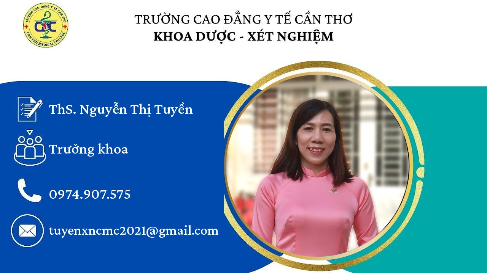
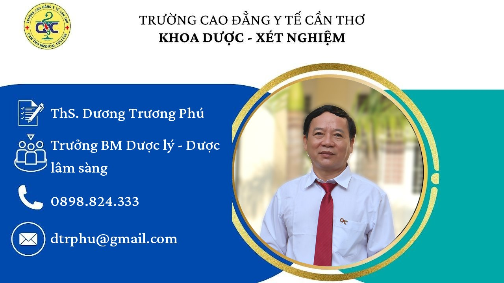
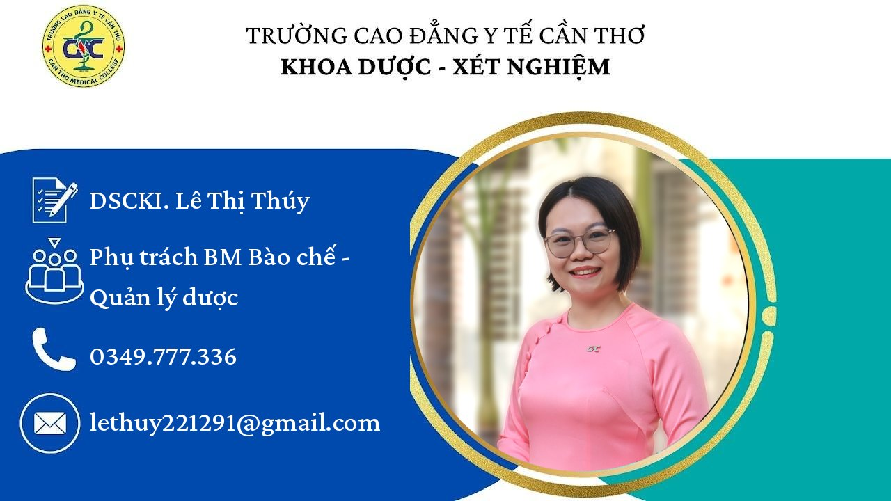
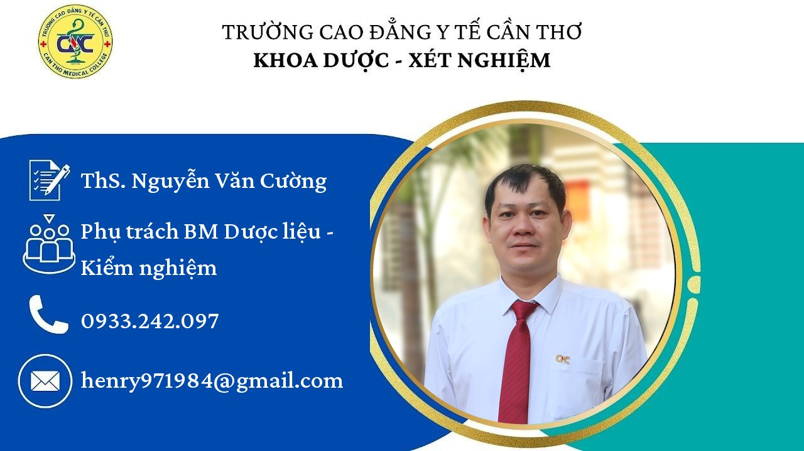
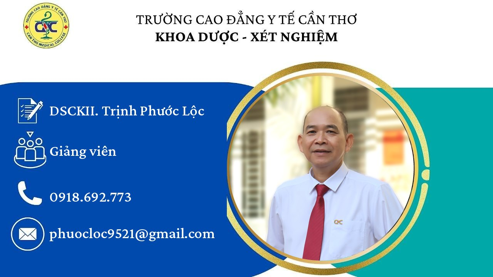
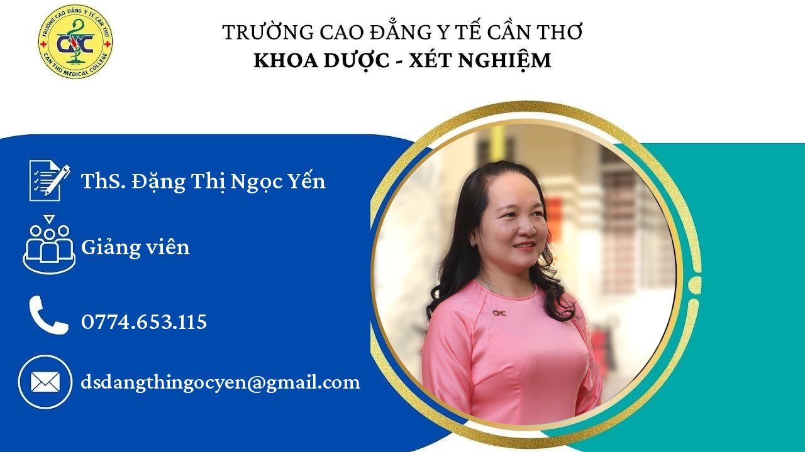
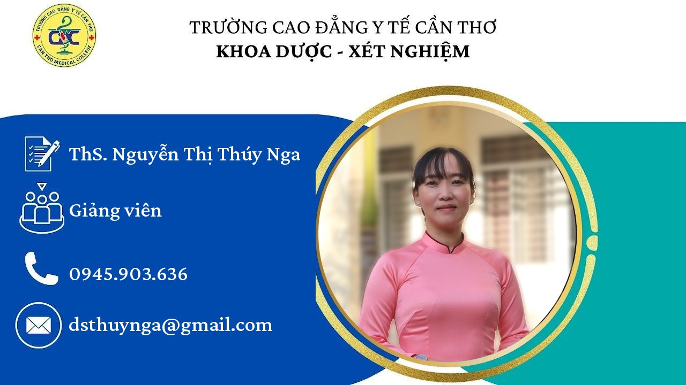
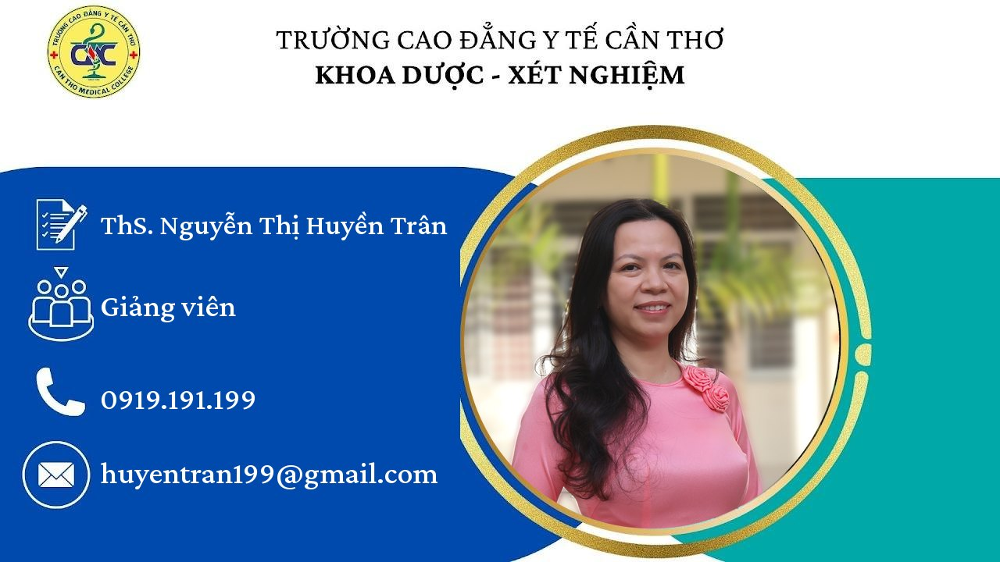
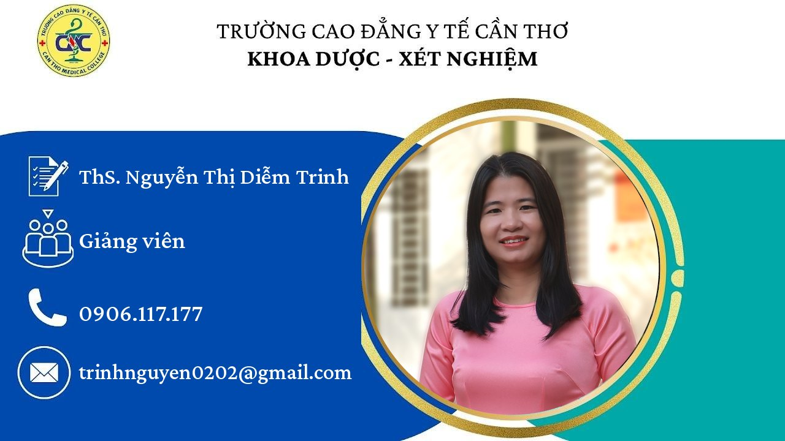
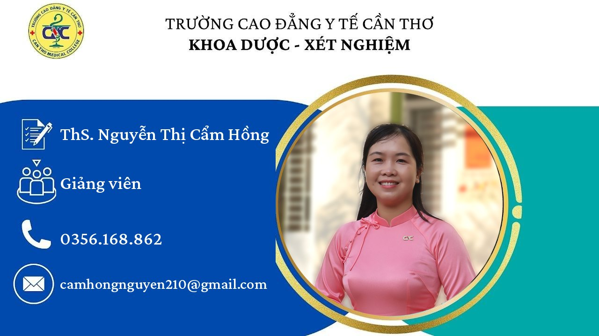
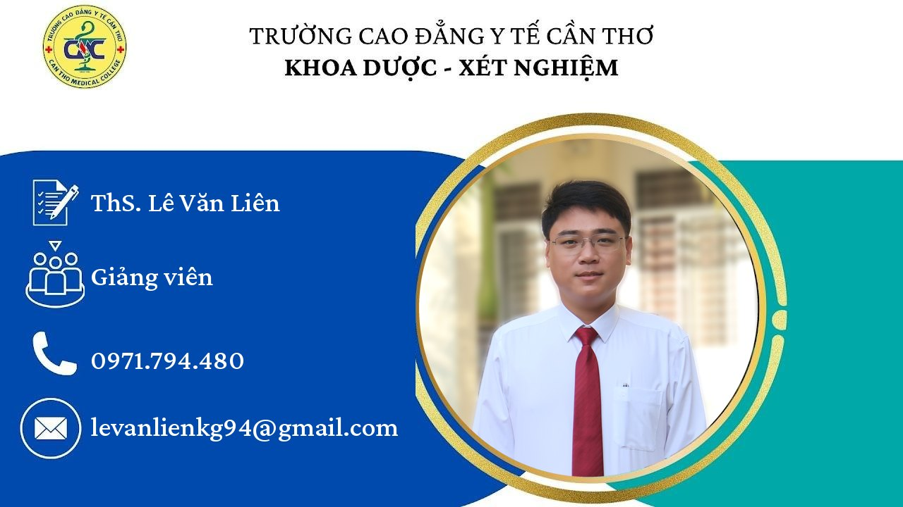
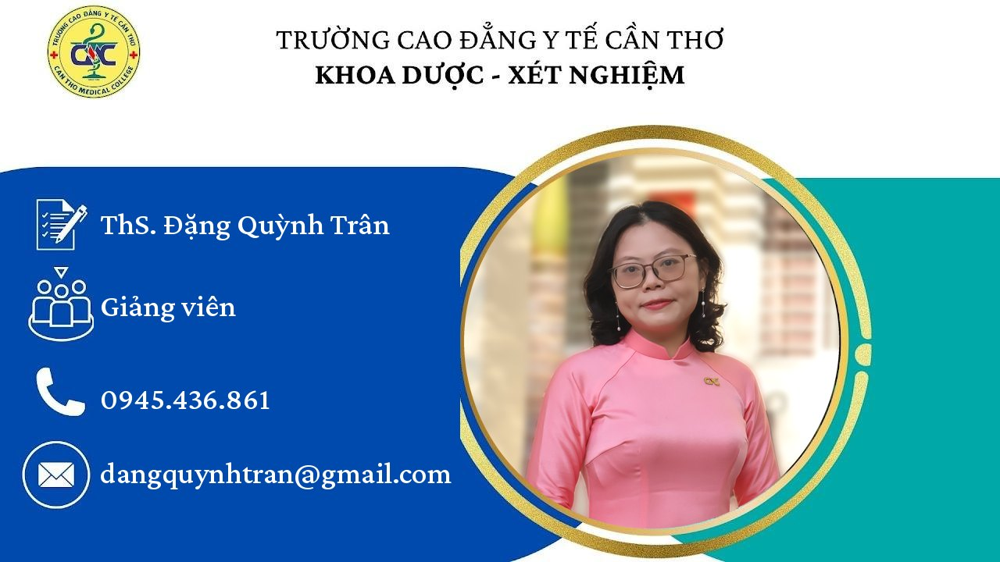
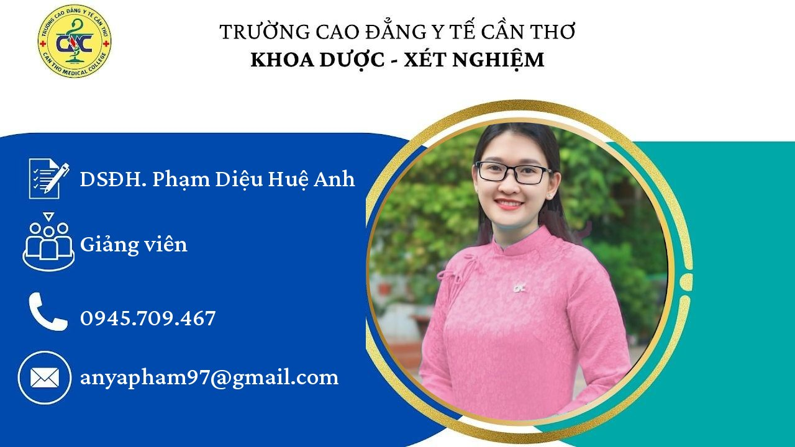
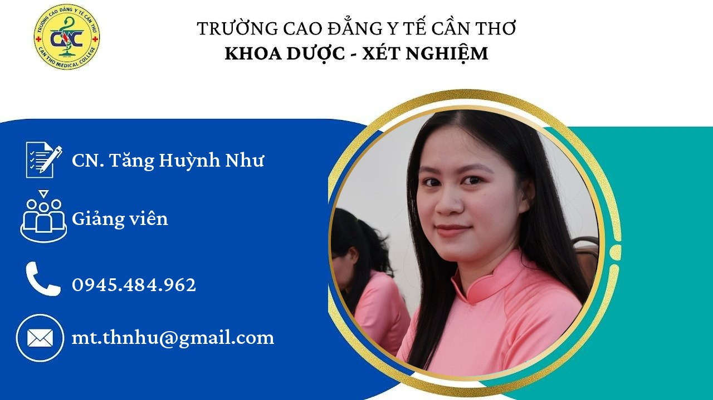
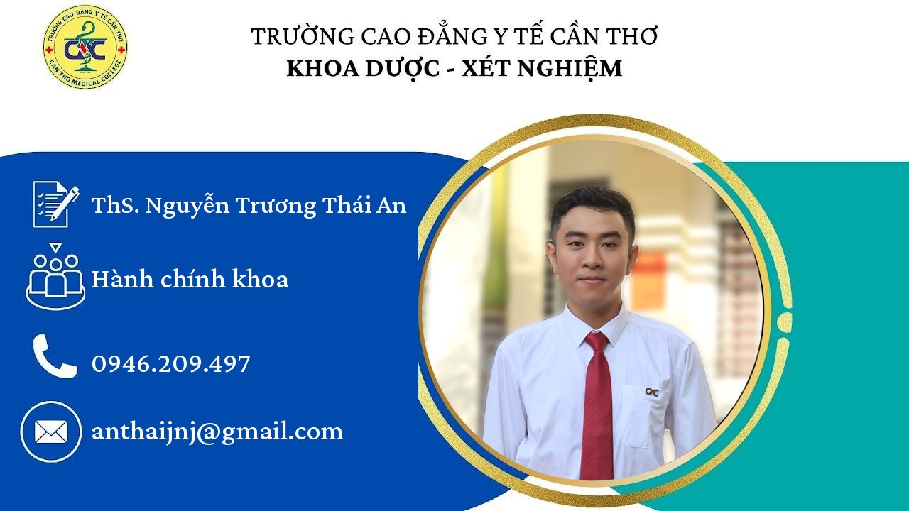

Tại sao chọn ngành Dược - Xét nghiệm?

Ngành Dược và ngành Xét nghiệm là hai lĩnh vực trụ cột trong hệ thống y tế, đóng vai trò quan trọng trong việc chăm sóc và bảo vệ sức khỏe cộng đồng. Với ngành Dược, sinh viên được trang bị kiến thức và kỹ năng chuyên môn về bào chế, kiểm nghiệm và tư vấn sử dụng thuốc, góp phần nâng cao hiệu quả điều trị và cải thiện chất lượng cuộc sống cho người bệnh. Trong khi đó, ngành Xét nghiệm cung cấp nền tảng kiến thức và kỹ năng chuyên môn để thực hiện các xét nghiệm, đưa ra kết quả chính xác, hỗ trợ các bác sĩ trong việc chẩn đoán và điều trị bệnh kịp thời.
Cả hai ngành đều mang lại cơ hội nghề nghiệp đa dạng và lâu dài trong các bệnh viện, phòng khám, công ty dược phẩm, trung tâm nghiên cứu, và cả lĩnh vực giáo dục y tế. Hơn thế nữa, đây là lựa chọn lý tưởng cho những ai đam mê khoa học, y học, và mong muốn tạo ra giá trị xã hội bền vững. Việc chọn ngành Dược hoặc ngành Xét nghiệm không chỉ giúp sinh viên phát triển sự nghiệp vững chắc mà còn trở thành một phần quan trọng trong hành trình bảo vệ sức khỏe cộng đồng.
Hộp thư góp ý
Quét mã QR để điền thông tin vào Google Form.
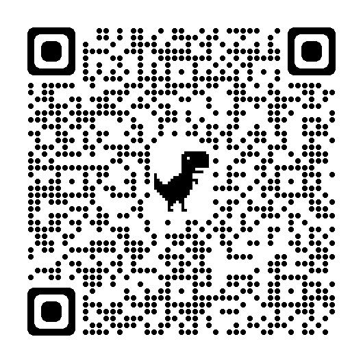
Quét mã QR để gửi góp ý
Phản hồi nội dung góp ý, thắc mắc
Điều kiện và quy trình bảo lưu kết quả học tập là gì?
Thông thường, bạn cần đáp ứng điều kiện như có lý do hợp lệ (sức khỏe, hoàn cảnh gia đình, đi du học, v.v.) và nộp đơn bảo lưu kèm giấy tờ minh chứng. Liên hệ Phòng Đào tạo để biết chi tiết quy trình và thời hạn nộp hồ sơ.
Em bị ốm và không thể tham gia một số buổi học. Làm thế nào để không bị điểm danh thiếu?
Hãy thông báo trước với giảng viên và gửi giấy chứng nhận y tế hoặc minh chứng phù hợp sau khi hồi phục. Bạn cũng nên hỏi bạn bè về nội dung đã học để đảm bảo không bỏ lỡ kiến thức.
Nếu em không đồng ý với điểm số của mình, em có thể làm gì?
Bạn nên kiểm tra kỹ đề thi và kết quả chấm, sau đó làm đơn khiếu nại gửi đến giảng viên hoặc hội đồng chấm thi trong thời hạn quy định. Hãy trình bày rõ ràng các phần bạn muốn xem xét lại và lý do.
Làm thế nào để biết mình đủ điều kiện nhận học bổng?
Điều kiện nhận học bổng thường được công bố trên trang web của trường hoặc thông qua thông báo từ Phòng Công tác Sinh viên. Hãy kiểm tra các tiêu chí về điểm trung bình, điểm rèn luyện, và các hoạt động ngoại khóa. Nếu đủ điều kiện, bạn cần chuẩn bị hồ sơ và nộp trước hạn.